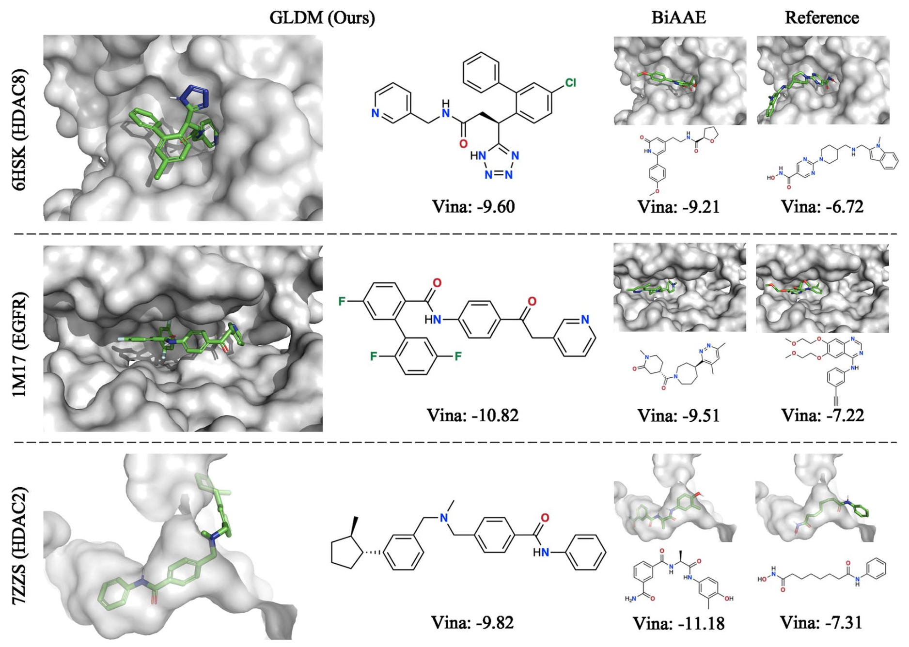
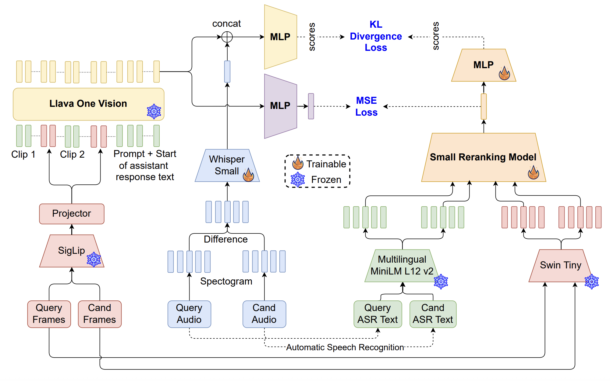
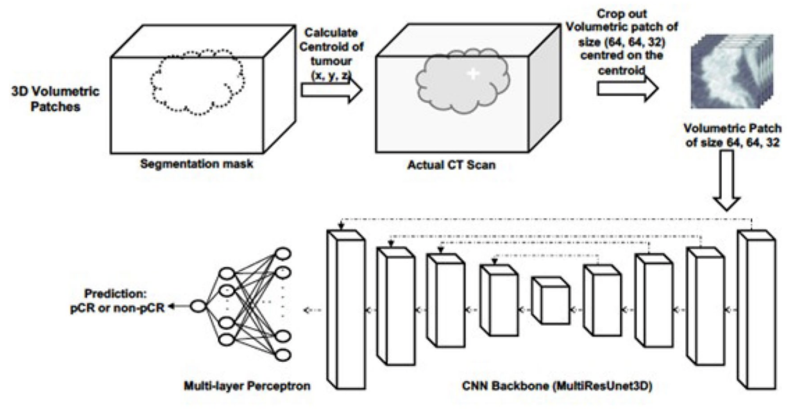

Experience
Algorithm Engineer
Jan 2024 - Present- Video deduplication using multimodal video/audio/text models
- Adapting MLLMs for video reranking and retrieval
AI Engineer Intern (AI Centre of Excellence)
May 2023 - Aug 2023- Containerized and built LLM powered conversational news aggregator web application using NextJS, FastAPI, and Langchain
- Built regularly scheduled continual learning pipeline with data versioning, incorporating experiment monitoring using MLFlow for the purpose of retraining legal document question answering model on Azure Databricks
Data Science Intern (Deliveries Team)
Jan 2023 - May 2023- Built Named Entity Recognition (NER) toolbox for preprocessing, training, evaluation and inference, incorporating different text encoders with a CRF layer for mining entity names for constructing a taxonomy tree
- Web scraping, synthetic data generation and data curation for NER task
Software Development Intern (Data Mining Team)
May 2022 - Nov 2022- Built and scaled core infrastructural features for enabling and accelerating large scale feature caching and training for motion planning models in multinode distributed setting for open source nuPlan devkit
- Researched and implemented algorithms for occlusion mining in order to improve perception networks used by the autonomous vehicles and trained motion planning models on large scale data
Data Science intern (Identify Verification Team)
May 2021 - Jul 2021- Mined datasets from the internal unlabeled data using a combination of traditional computer vision techniques and generation of synthetic data
- Trained an object detection model RetinaNet and a StyleGAN on the internal Identity Card dataset to generate a synthetic dataset that simulates digital manipulation attacks and wrote a set of python packages to automate the generation of these attacks
Research Intern
Jun 2020 - Oct 2020- Conducted literature review to identify Eye Tracking metrics indicative of Situation Awareness
- Implemented data processing and real time visualisation of eye tracking metrics
- Ran experiments on time series classification of eye tracking metrics
Research Publications

GLDM: hit molecule generation with constrained graph latent diffusion model
Targeted Drug discovery using adversarial graph autoencoders and latent diffusion models. The goal is to generate promising drug molecules that can induce the desired gene expression change in cells.

Dynamic Content Moderation in Livestreams: Combining Supervised Classification with MLLM-Boosted Similarity Matching
Large-scale Content Moderation System on TikTok Live, using a suite of multimodal models (Images/Audio/Text) enhanced with MLLMs using knowledge distillation.

Multi-center evaluation of artificial intelligent imaging and clinical models for predicting neoadjuvant chemotherapy response in breast cancer
Application of classical Machine Learning and Deep Learning methods for predicting patient response to Neoadjuvant Chemotherapy.
Education
GCE A Levels
2011 - 2016Grade: 7 Distinctions
Bachelor of Engineering Science (Computer Science)
2019 - 2023Renaissance Engineering Programme
Honours (Highest Distinction)
2021 - 2021
National University of Singapore
Singapore Universities Student Exchange Programme
Exchange Semester
2022 - 2022
University of California, Berkeley
Globe Visiting Scholar Program
Exchange Semester
Master of Science (Technology Management)
2019 - 2023Renaissance Engineering Programme